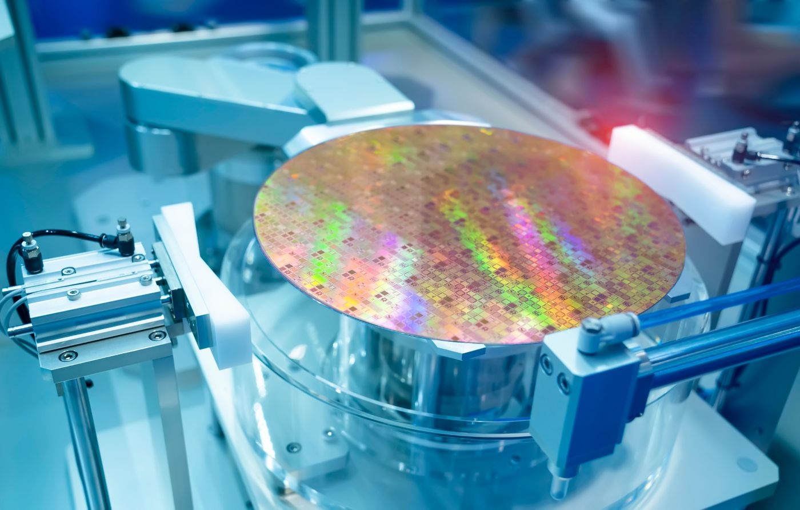
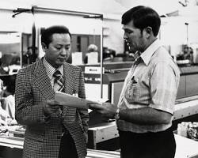

TSMC 系列 · 第一篇
张忠谋、台积电与芯片产业的全景图
17号野生分析师 · 2025
iPhone 的 A 系列芯片 — 台积电制造
安卓手机的 骁龙 / 天玑 — 台积电制造
笔记本的 M 系列 / 锐龙 — 台积电制造
训练 ChatGPT 的 英伟达 GPU — 还是台积电
全球晶圆代工市场份额
美元营收
美元净利
先进制程
2025 · 均创历史新高
01
一颗芯片的诞生

没有这些设备和材料，再有钱的晶圆厂也只是一堆空壳。
| 台积电 | 三星 | 中芯 | 联电 | 格芯 | |
|---|---|---|---|---|---|
| 份额 | 72% | 7-8% | 5% | ~4% | ~4% |
所有对手加起来，不到台积电的一半
先进制程（7nm 以下）：台积电份额超过 90%
上游 — ASML 要看台积电的扩产计划安排产能。台积电打个喷嚏，设备行业都要感冒。
下游 — 英伟达、苹果、AMD 的旗舰芯片全部依赖台积电。台积电的排期直接决定它们的上市时间和利润表。
台积电的生态锁定就像苹果的全家桶——一旦设计流程扎根在台积电平台上，切换的代价惊人。
02
从宁波到硅谷

1985 年，中国台湾政务委员李国鼎邀请张忠谋赴台，任务：帮台湾建立半导体产业。
当时的半导体是 IDM 模式——设计和制造全包。英特尔、德州仪器、摩托罗拉都这么干。一座晶圆厂要几亿美元，只有大公司玩得起。
张忠谋在德州仪器的 25 年里反复观察到同一个现象：
大量才华横溢的设计师想创业，却被"建晶圆厂太贵"死死拦住。
"真男人要有自己的工厂。"
— AMD 时任 CEO · Real men have fabs
一家只做代工的公司？听起来像芯片业的富士康——
没有品牌，没有产品，谈什么技术含量？
张忠谋想：
不跟任何客户竞争，不存在偷设计的动机
所有客户的订单一视同仁
有好想法却没钱建厂的设计师，可以放心把制造交出去
03
从亏损到飞轮
1987 年和 1990 年都出现了亏损，客户屈指可数。
绝大多数芯片公司还是自己设计自己造，纯代工的需求有限。
台积电的第一批客户，很多是找不到大厂愿意代工的小型设计公司——说白了，被挑剩下的。
但张忠谋赌的不是现在。他赌的是一个趋势：芯片设计越来越复杂，制造成本越来越高，迟早会有越来越多的公司选择外包制造。
01
永远不设计自己的芯片
从结构上消除"抄袭"的恐惧
02
良率媲美甚至超越 IDM 大厂
每提高一个百分点，客户降一大块成本
03
客户之间严密信息隔离
知识产权就是生命的行业里至关重要
1991 年起
台积电再也没有亏过钱。
越来越多的 Fabless 公司出现——只做设计，制造全部交给台积电。
到 2000 年，60% 的营收来自 Fabless 客户。
名单上已经出现了高通、博通、英伟达。
1994 台湾上市。1997 纽约证交所上市——首家在纽交所挂牌的台湾公司。
"张忠谋把半导体创业的门槛
从几亿美元降到了几百万美元，
这改变了一切。"
— James Plummer · 斯坦福大学工程学院院长
台积电不只是抓住了一个趋势——它催生了一整个产业。
2018 年 6 月，87 岁的张忠谋正式退休。
一个鲜为人知的事实：他在创立台积电时没有获得任何公司股票。
"如果拿创造的股东价值来衡量个人回报，
我的成绩简直糟糕透顶。"
一个 56 岁才开始创业的人
用一个没人看好的想法
重新定义了整个科技产业的运作方式
下一篇：只做代工，凭什么成为全球最重要的公司？